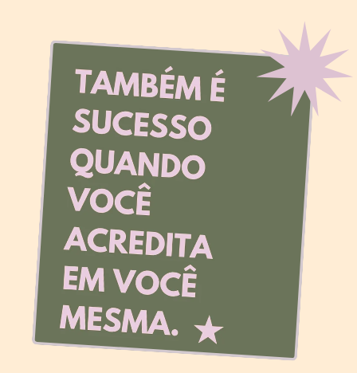

Um espaço gentil para cuidar de você.
Seu bem-estar não precisa esperar. Encontre apoio, inspiração e pequenos passos possíveis para o dia de hoje.

Onde a terapia vai além do consultório, a qualquer hora, em qualquer lugar.
Um ponto de partida para você.Cada cuidado conta.
Pequenas práticas que, juntas, ajudam a criar uma rotina mais sua.
A sua jornada é única.
Na Mentaltech, acreditamos que o cuidado com a mente se constrói no dia a dia. Reunimos apoio psicológico, hábitos saudáveis e momentos de pausa para ajudar você a encontrar o que faz sentido para sua vida.
Não é sobre fazer tudo. É sobre descobrir, com gentileza, o próximo pequeno passo.
Você não precisa passar por isso só.
Se estiver em sofrimento ou em risco imediato, procure alguém de confiança e acione um serviço de apoio. Estes canais são gratuitos ou de utilidade pública no Brasil.
CVV · Apoio emocionalConverse gratuitamente, 24 horas por dia188Em uma emergência imediata, ligue para o serviço adequado à sua situação. A Mentaltech é um protótipo e não substitui atendimento profissional.